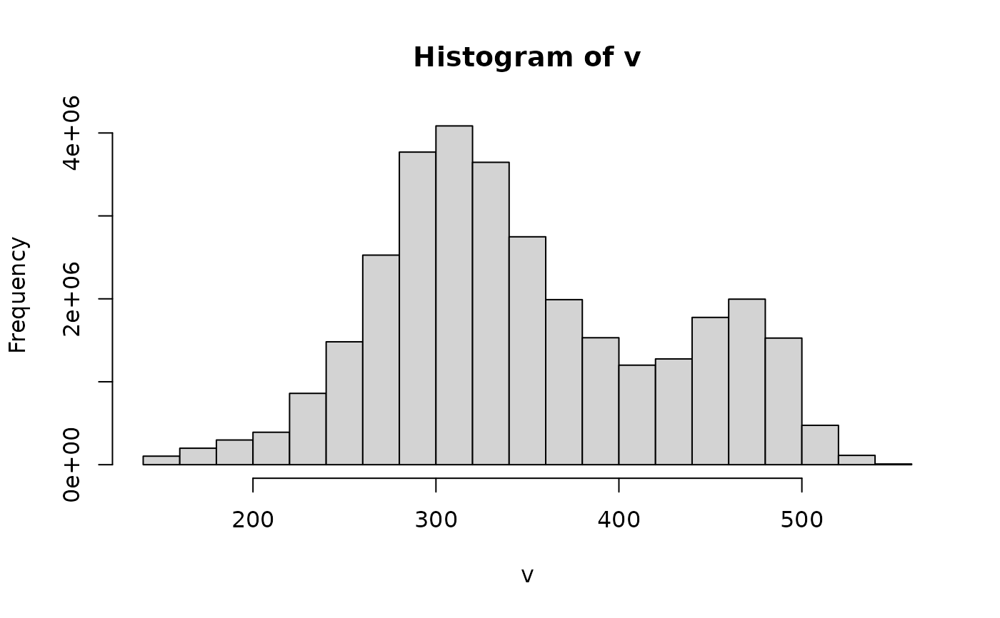

super handy warper but limited in that returns in memory SpatRast. May cause issues when creating a raster > memory. Also not clear how to implement the cutline feature.
Arguments
- x
a list or vector of raster source(s) or SpatRaster(s)
- y
a raster source, SpatRaster, sf, or sfc
- res
numeric. the resolution of the output SpatRaster.
- bands
numeric which bands to use from the source. Only used if
engine="vapour"- resample
resampling method. default is bilinear, see details.
- cutline
an sf, sfc, SpatVector or ogr-readable spatial vector source to mask the output raster. see -cutline argument in gdalwarp
- crop_to_cutline
logical. If TRUE, then the output will be cropped to the limits of the mask given in cutline.
- nodata
Numeric. No data value to be used for output.
- out_class
default is "SpatRaster". Can be either "SpatRaster", "stars", "path", "rayshader", or "vector".
- filename
the filepath for the out raster. if given and "vapour" is used for the engine, then the output SpatRaster/stars object will have a source. If NULL then an in memory raster is returned. If the sf engine is used and filename is NULL then a tempfile is used.
- overwrite
logical - should a file be overwritten.
- options
gdal options.
- compression
default is "DEFLATE". character describing tif compression e.g. "LZW"
- engine
either "vapour" or "sf". choose which warper to use. Only vapour supports in memory raster creation.
- ...
Additional args passed to
vapour::vapour_warp_raster. Might be removed.
Details
When selecting the resample method, choose from the following options: 'bilinear' (the default), 'near', 'cubic', 'cubicspline', 'lanczos', 'average', 'mode', 'max', 'min', 'med', 'q1', 'q3', 'sum'. For details on these methods see: https://gdal.org/programs/gdalwarp.html. If raster source is categorical make sure to use 'near'.
If "rayshader" is used for out_class, then a matrix is returned if only one
band is targeted. If multiple bands are targeted, then a n-dimensional array
is returned. The matrix is returned oriented North is up.
If "vector" is used for out_class, a vector is returned for a single band
target, and a list of vectors is returned for a multiband target.
If "path" is used for out_class, a path to the output raster is returned.
Examples
f <- system.file("ex/elev.tif", package = "terra")
r.terra <- terra::rast(f)
ezwarp(f, f, res = 1e-4)
#> class : SpatRaster
#> size : 7501, 7918, 1 (nrow, ncol, nlyr)
#> resolution : 1e-04, 1e-04 (x, y)
#> extent : 5.7416, 6.5334, 49.4416, 50.1917 (xmin, xmax, ymin, ymax)
#> coord. ref. : lon/lat WGS 84 (EPSG:4326)
#> source(s) : memory
#> name : Band1
#> min value : 141
#> max value : 547
ezwarp(r.terra, f, res = 1e-4, engine = "sf", out_class = "stars")
#> stars object with 2 dimensions and 1 attribute
#> attribute(s), summary of first 1e+05 cells:
#> Min. 1st Qu. Median Mean 3rd Qu. Max. NA's
#> file230c1f3a81bf.tif NA NA NA NaN NA NA 1e+05
#> dimension(s):
#> from to offset delta refsys point x/y
#> x 1 7918 5.742 1e-04 WGS 84 FALSE [x]
#> y 1 7501 50.19 -1e-04 WGS 84 FALSE [y]
v <- ezwarp(r.terra, f, res = 1e-4, out_class = "vector")[[1]]
hist(v)
